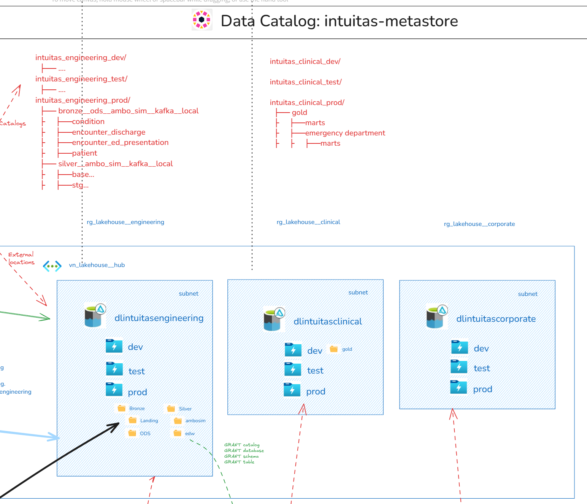
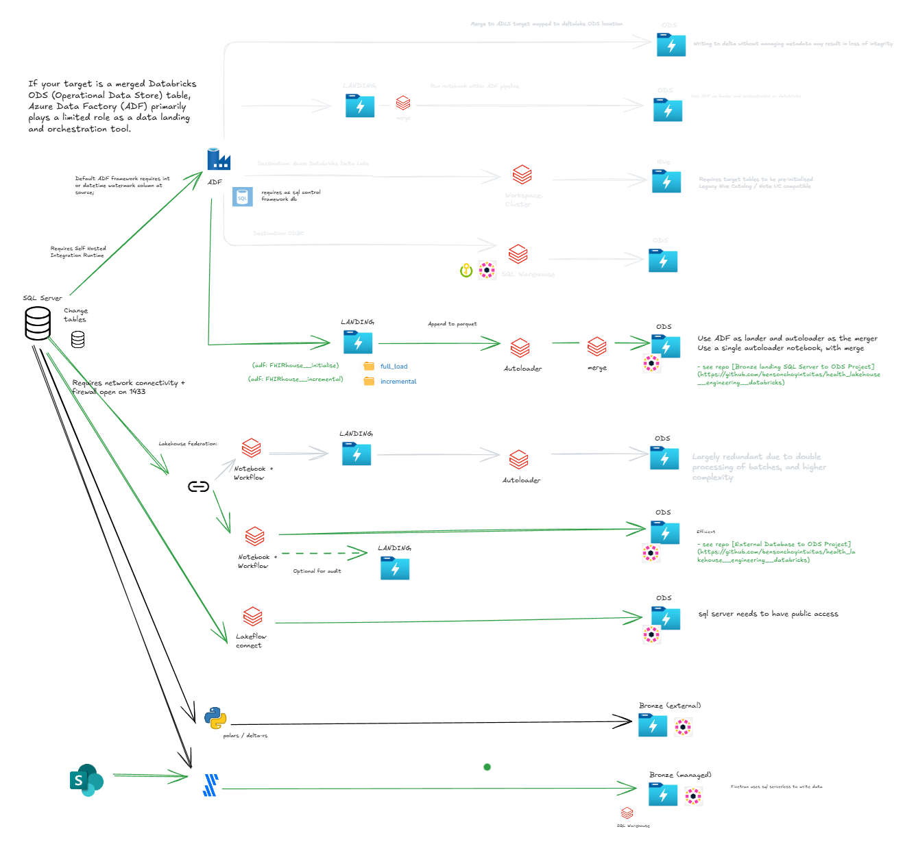

Level 2 - Domain-Level (Solution) Architecture and Patterns
This section describes Domain-level instantiations of the enterprise-level reference architecture. i.e. solutions (See Enterprise Data Platform Reference Architecture)
Table of Contents
Example reference architecture:

Business architecture
Business processes
Business processes are the activities and tasks that are performed to achieve the goals of the business. Understanding them is necessary to understand: - the context in which data is captured and used - concepts and entities that are relevant to the domain - the relationships between different processes and data
Business glossary
A business glossary is a list of terms and definitions that are relevant to the business. see Domain Glossary.
Business metrics
Metrics are the measurements of the performance of the business processes. They should be documented according to a defined template that captures, at a minimum, the following: - name - definition - formula (with reference to data elements and definitions in the business glossary) - dimensions - source(s) - metric owner - frequency
Infrastructure
This section is a work in progress
Environments, Workspaces and Storage

This diagram illustrates a data lakehouse architecture with the following components and flow:
Data Sources
Data originates from multiple sources such as: - Databases - Kafka or event streaming - APIs or Python scripts - SharePoint (or similar sources)
Enterprise Engineering Layer
- Centralized enterprise workspaces are managed here with multiple environments. While work can be achieved within a single workspace and lakehouse storage account, decoupling the workspaces and storage accounts allow for more isolated change at the infrastructure level - in line with engineering requirements:
- Each workspace contains:
- Data from prod catalogs can be shared to other domains.
Domain-Specific Layer
- Each domain (e.g., business units or specific applications) operates independently within a single workspace that houses multiple environments.
- PROD, TEST, and DEV storage containers within a single lakehouse storage account for domain-specific data management.
- Local Bronze for domain-specific engineering of domain-local data (not managed by enterprise engineering)
- Data from prod catalogs can be shared to other domains.
Data Catalog
- A centralized data catalog (unity catalog) serves as a metadata repository for the entire architecture:
- Enables discovery and governance of data.
- Optional external catalog storage.
Secrets
This section is a work in progress - Management - Areas of use - Handling practices
Storage
Lakehouse storage
Lakehouse data for all environments and layers, by default, share a single storage account with LRS or GRS redundancy. This can then be modified according to costs, requirements, policies, projected workload and resource limits from both Azure and Databricks.
- Resource: ADLSGen2
- Tier: Standard/Premium (depends on workload)
- Redundancy:
- Minimum ZRS or GRS for prod
- Minimum LRS for poc, dev, test and preprod
Generic Blob storage
Generic Blob storage can be used for all non-lakehouse data; or alternatively within the lakehouse storage account in the appropriate container and folder.
- Resource: ADLSGen2
- Generic storage account name: sa{organisation_name}{domain_name}{functional_description}
- Tier: Standard/Premium (depends on workload)
- Redundancy:
- Minimum ZRS or GRS for prod
- Minimum LRS for poc, dev, test and preprod
CICD and Repository
This section is a work in progress - Description of git workflows for CICD in terms of: - Infrastructure - Data engineering - Analytics engineering - Data science / AIML - BI, Reports and other products
Tools
- Github
- Azure Devops
- Databricks Asset Bundles
Repositories
- Infrastructure
- dbt projects (separate for each domain)
- potential for enterprise level stitching of lineage
- Data engineering code (separate for each domain) using Databricks Asset Bundles
Observability
Tools
- dbt observability - Elementary
- Databricks observability - Databricks monitoring dashboards
- ADF - Native adf monitoring
Networking
By default - all resources reside within the same VNet with private endpoints.
Service endpoints and policies are enabled.
Orchestration
Tools
- Azure Data Factory (if needed)
- Databricks Workflows (for both databricks and dbt)
Security
Tools
- Azure Entra
- Azure Key Vault
- Unity Catalog
- System access reports
Data Architecture
Data Architecture refers to how data is physically structured, stored, and accessed within an organization. It encompasses the design and management of data storage systems, data models, data integration processes, and data governance practices.
Data and information models
Domain-level data and information models are typically closer aligned to real-world business semantics and business rules, which may not necessarily align with the broader enterprise or other domains.
See Bounded context
Domain glossary
- Expand on the enterprise glossary and add domain specific terms and definitions.
- In cases where domain definitions are synonymous with enterprise definitions, the enterprise glossary should be referenced.
- In cases where definitions are conflicting, governance should be applied to resolve the conflict.
Domain data and warehouse models
- Domain-level data and warehouse models reflect domain-specific scope, requirements and semantics as expressed in models and glossaries.
- Conformed dimensions may serve as a bridge between domains for common entities.
Data layers and stages
Data and analytics pipelines flow through data layers and stages. Conventions vary across organisations, however the following is an effective approach:
- Top level layers follow the Medallion architecture.
- Within each layer, data is transformed through a series of stages.
Metadata
Contains metadata that supports engineering and governance. This will vary depending on engineering and governance toolsets
Bronze
The Bronze layer stores raw, immutable data as it is ingested from source systems.
(Persistent) Landing
- Initial storage area for raw data from source systems.
- Stores raw events as JSON or CDC/tabular change records.
-
Data is maintained in a primarily raw format, with the possibility of adding extra fields that might be useful later, such as for identifying duplicates. These fields could include the source file name and the load date.
- Partitioned by load date (YYYY/MM/DD/HH)
- Raw data preserved in original format
- Append-only immitable data.
- Schema changes tracked but not enforced
ODS (Operational Data Store)
- Current state of source system data with latest changes applied.
- Maintains latest version of each record
- Supports merge operations for change data capture (CDC)
- Preserves source system relationships
PDS (Persistent Data Store)
- Historical storage of all changes over time.
- Append-only for all changes
- Supports point-in-time analysis
- Configurable retention periods
- As these may be available in landing - may be realised through views over landing
Silver
The Silver layer is source centric and focuses on transforming raw data into cleaned, enriched, and validated datasets.
Base Models
- Representation of source data with no changes. Used as a foundation for staging models as well as data quality checks.
Staging Models
-
Source-system and object centric transformations that are core to all downstream consumption.
-
Examples of transformations:
01_renamed_and_typed02_deduped03_cleaned04_filtered/split05_column_selected06_business_validated07_desensitised
Enrichment Models
Still source-centric, however: - more complex business logic and transformations are applied e.g. common calculations and derivations. - may combine multiple staging objects from the same source
- By separating enrichment from core staging, we can schedule these processes independently. This allows for flexibility in updating or refreshing only the parts of the data pipeline that need it, reducing unnecessary computation and improving efficiency. It also allows for change and versioning of those business rules with minimal impact on core staging objects.
Source Reference Data
- For convenience, reference data specific to the source can be segregated here and aligned to standards and downstream needs.
Raw Vault
- Data vault 2.0 aligned raw data warehouse.
Gold
The Gold layer focuses on business-ready datasets, aggregations, and reporting structures.
Business Vault
- Data vault 2.0 aligned business data warehouse where business rules and transformations are applied.
Intermediate Models
-
These act as building blocks for marts, transforming and aggregating data further. Then be thought of as mart staging https://docs.getdbt.com/best-practices/how-we-structure/3-intermediate
-
Business-specific transformations such as:
- Pivoting
- Aggregation
- Joining
- Funnel creation
- Conformance
- Desensitization
Enterprise Reference Data
- Reference data, independent of source can be aggregated here for broad consumption.
Marts - Facts and dimensions
- Kimball style marts that represent business entities and processes. They may
- serve foundational or narrow requirements.
- be scoped to specific systems or conformed across the enterprise
Marts - Denormalised
- Single table / view objects that combine data from multiple objects (e.g. facts and dimensions)
Lakehouse Catalog to Storage Mapping
Unity catalog objects (catalogs, schemas, objects) are mapped to: - Storage accounts - Environments (containers: dev, test, prod) - Layers (Level 1 folders: dev.bronze, dev.silver, dev.gold, etc) - Stages (Level 2 folders: dev.bronze\landing, dev.bronze\ods, dev.silver\base, dev.silver\staging etc)
Example:

Data Engineering
Ingestion
Ingestion is the process of acquiring data from external sources and landing it in the platform landing layer.
It should be: - Scalable, Resilient, Maintainable, Governed - Pattern-based, automated and Metadata-driven where possible - Batch and stream-based
Example batch ingestion options:

Ingestion patterns and notes:
-
Pattern 1: streaming: kafka -> landing -> databricks autoloader -> ods
- see repo Bronze Landing to ODS Project
-
Pattern 2: batch: source -> adf -> landing -> databricks autoloader merge to ods
- see repo Bronze landing SQL Server to ODS Project
-
adf requires azure sql and on-premise integration runtime
-
see repo External Database to ODS Project
- requires network access to source
-
Pattern 4: batch/streaming: source -> custom python -> deltalake -> external table
-
Pattern 5: sharepoint -> fivetran -> databricks sql warehouse (ods)
- see repo fivetran
Rejected patterns:
- batch: adf -> deltalake -> ods (does not support unity catalog, requires target tables to be pre-initialised)
- batch: adf -> databricks sql endpoint -> ods (no linked service for databricks)
- batch: adf + databricks notebook -> landing, ods, pds (more undesireable coupling of adf and databricks an associated risks)
Transformation
This section is a work in progress
Batch and Micro-batch SQL transformation
Streaming SQL transformation
This section is a work in progress
Non SQL transformation
This section is a work in progress
Data sharing and delivery patterns

Row Level Security
Pull / direct access
Databricks Delta sharing practices
- Databricks Delta Sharing allows read-only access directly to data (table, view, change feed) in the lakehouse storage account. This allows for the use of the data in external tools such as BI tools, ETL tools, etc. without the need to use a databricks cluster / sql endpoint. -Permissions: Delta sharing is a feature of Databricks Unity Catalog that requires enablement and authorised user/group permissions for the feature as well as the shared object.
- Costs: In Delta Sharing, the cost of compute is generally borne by the data consumer, not the data provider. Other costs include storage API calls and data transfer.
- Naming standards and conventions see naming standards
- Tightly scope the share as per the principal of least privilege:
- Share only the necessary data
- Single purpose, single recipient
- Granular access control
- Set an expiry
- Use audit logging to track access and usage
sql SELECT * FROM system.access.audit WHERE action_name LIKE 'deltaSharing%' ORDER BY event_time DESC LIMIT 100; -
Limitations:
- No Row Level Security and Masking support (dynamic views required)
-
Reference: Security Best Practices for Delta Sharing
ADLSGen2 Access to Data
- Provide direct ADLSGen2 access via Managed Identity, SAS or Account Key
- Note: While technically possible, ADLSGen2 access is not generally recommended for end user consumption as it bypasses the Unity Catalog and associated governance and observabilit controls.
- Example Scenarios: Direct ADLS file sharing might be preferable in certain cases, even when Delta Sharing is available:
- Unstructured data
- Large non-delta file transfer
- Consumers that don't support Delta Sharing
DuckDB Access to Data (via Unity Catalog)
- Example: DuckDB is a popular open-source SQL engine that can be used to access data in the lakehouse. It can be run on a local machine or in-process in a Databricks cluster.
- Costs: DuckDB data access will incur costs of the underlying compute, storage access, data transfer, etc., similar to Delta Sharing.
-
Example Opportunities/Uses:
- Last mile analysis
- SQL interface to Delta, Iceberg, Parquet, CSV, etc.
- dbt compatibility
- Local execution and storage of queries and data
- Use as feed visualization tools, e.g., Apache Superset
-
See repo DuckDB
-
Limitations:
- Unity Catalog not yet supported
- Delta Kernel not yet supported
SQL Access
- SQL Access is provided by the Databricks SQL (serverless) endpoint.
API Access
This section is a work in progress - The Databricks SQL Statement Execution API can be used to execute SQL statements on a SQL warehouse and fetch the result.
References:
- https://docs.databricks.com/api/workspace/statementexecution
- https://docs.databricks.com/en/dev-tools/sql-execution-tutorial.html
Snowflake Access
This section is a work in progress
- Snowflake access is provided by Databricks Delta Sharing.
- Snowflake access is also provided by Databricks Delta Lake external tables over ADLSGen2 see external tables
References: - tutorial
Microsoft Fabric Access
The following describes options for providing access to Microsoft Fabric / PowerBI
Option 1. Share via Delta Sharing
Steps:
1. Create a delta share
2. Use the delta share to get data from within PowerBI
Evaluation:
- Pros:
- No duplication
- Centralised control over access policies
- Compute costs on consumer
- Cons:
- Row Level Security and Masking support via dynamic views only
- See [limitations](https://learn.microsoft.com/en-au/azure/databricks/partners/bi/power-bi). e.g. The data that the Delta Sharing connector loads must fit into the memory of your machine. To ensure this, the connector limits the number of imported rows to the Row Limit that was set earlier.
Option 2. Directlake via ADLSGen2
Steps:
1. Create a new connection to ADLSGen2 using a provided credential / token / Service principal
2. Create a lakehouse shortcut in Fabric
Evaluation:
- Pros:
- No duplication
- Potentially better PowerBI performance (untested)
- Compute costs on consumer
- No views
- Cons:
- Less control over access policies than Delta Sharing (outside of Unity Catalog)
- Requires granular ADLSGen2 access controls and service principals, and associated management overhead
- No Row Level Security and Masking support
- May require OneLake
Option 3. Fabric mirrored unity catalog
Steps:
1. Within a Fabric Workspace, create a new item `Mirrored Azure Databricks Catalog`
2. Enter the Databricks workspace config to create a new connection
Evaluation:
- Pros:
- No duplication
- Convenient access to all Databricks Unity Catalog objects (within credential permissions)
- Cons:
- not GA or tested
- service-principal level identity required to enforce permissions
Option 4. PowerBI Import Via SQL Endpoint
Steps:
[Databricks documentation](https://learn.microsoft.com/en-au/azure/databricks/partners/bi/power-bi)
Evaluation:
- Pros:
- Potentially the best PowerBI performance and feature completeness
- Predictable costs on Databricks
- Cons:
- Some, but manageable Compute costs on Databricks
Option 5. PowerBI DirectQuery Via SQL Endpoint
Steps:
[Databricks documentation](https://learn.microsoft.com/en-au/azure/databricks/partners/bi/power-bi)
Evaluation:
- Pros:
- No duplication
- Unity Catalog Enforced Row Level Security and Masking
- Cons:
- High Compute costs on Databricks on every report interaction
- Likely deprecated in favour of DirectLake
- Less feature rich that import mode
*Option 6. Replicate into Fabric*
- Pros:
- Possibly reduced networking costs (depending on workload and networking topology)
- Cons:
- Duplicated data
- Engineering costs and overheads
- Latency in data updates (SQL Endpoint lag)
- Less governance control compared to Unity Catalog
- No Row Level Security and Masking support
- Requires use of Onelake and associated CU consumption
Push
This section is a work in progress
For consideration: - adf - databricks - lakeflow
Visualisation
This section is a work in progress
For consideration: - Powerbi - Databricks dashboards - Apps - Open source visual options
AI/ML
This section is a work in progress
For consideration: - MLOps - Training - Databricks - Azure ML
Data governance
This section describes how Enterprise-level governance will be implemented through solutions at the domain level.
Data lifecycle and asset management
This section is a work in progress
For consideration: - data contracts and policy - data asset tagging
Data access management
This section is a work in progress
For consideration: - data access request management - data contracts - access audit - activity audit
Data quality
This section is a work in progress
For consideration: - data quality checking and reporting - data standards and quality business rule management
Data understandability
This section is a work in progress
For consideration: - data lineage - data object metadata
Privacy Preservation
This section is a work in progress
For consideration: - row level security - data masking - column level security - data anonymisation - data de-identification
https://docs.databricks.com/en/tables/row-and-column-filters.html#limitations
"If you want to filter data when you share it using Delta Sharing, you must use dynamic views."
Use dynamic views if you need to apply transformation logic, such as filters and masks, to read-only tables and if it is acceptable for users to refer to the dynamic views using different names.
Row Level Security
This section is a work in progress
For consideration: - dynamic views - precomputed views
Audit
This section is a work in progress
For consideration: - audit log queries
Example questions and associated queries
As a Domain (workspace) Admin:
1. Where are there misconfigured catalogs / schemas / objects?
2. Who is sharing what to who and is that permitted (as per access approvals?)
3. Who is accessing data and are they permitted (as per access approvals?)
Billing
For more context and concepts, refer to the Enterprise Billing section in Level 1.